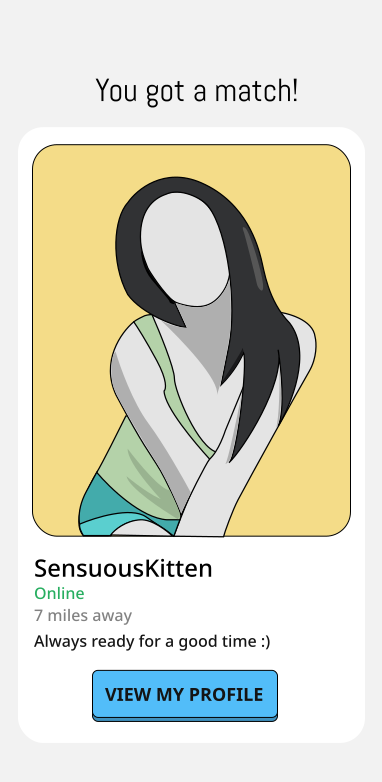

SensuosKitten was the vanguard of the robot army.
Ashley Madison, a popular dating website, created tens of thousands of fembots to lure men into paying for credits on the “have an affair” site. When men signed up for a free account, they would immediately be shown profiles of what internal documents call “Angels,” or fake women whose details and photos had been batch-generated using specially designed software. To bring the fake women to life, the company’s developers also created software bots to animate these Angels, sending email and chat messages on their behalf.